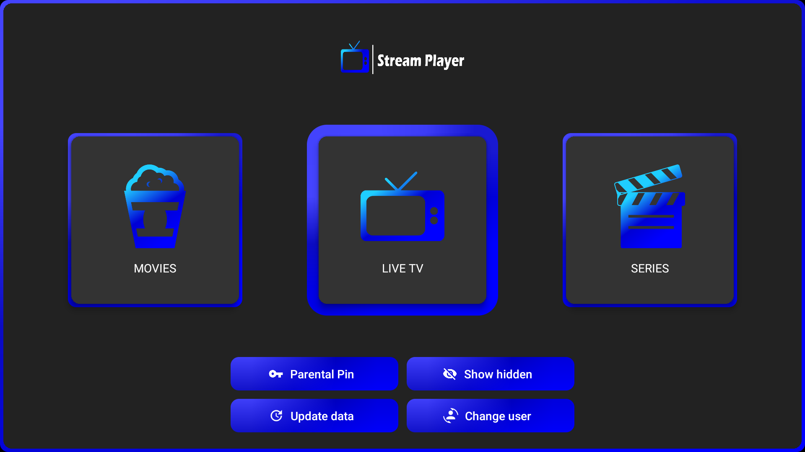

TV en directo
Reproduce listas compatibles de canales en directo.
Para dispositivos Amazon Fire TV compatibles
¿Buscas un reproductor IPTV para tu nuevo Amazon Fire TV Stick? Stream Player está disponible a través de Amazon Appstore. Abre la tienda en tu dispositivo para comprobar si está disponible e instalar la aplicación.
Ver Stream Player en Amazon AppstoreAmazon Appstore

Stream Player es un reproductor multimedia diseñado para televisores. La disponibilidad depende del modelo de Fire TV y de la versión ofrecida en Amazon Appstore.
Reproduce listas compatibles de canales en directo.
Accede y reproduce tu contenido de vídeo bajo demanda compatible.
Encuentra y reproduce fácilmente el contenido de tus series.
Algunos dispositivos Fire TV nuevos utilizan Vega OS en lugar de Fire OS basado en Android. La compatibilidad puede variar según el dispositivo. Busca Stream Player en Amazon Appstore desde tu Fire TV para comprobar si está disponible para tu modelo.
Ver Stream Player en Amazon AppstoreStream Player dispone de una versión para Vega OS publicada en Amazon Appstore. La disponibilidad puede depender de tu dispositivo y de la ficha que te muestre la tienda.
Abre Amazon Appstore en tu Fire TV, busca Stream Player e instálala si aparece disponible para tu dispositivo.
El APK de Android que ofrecemos en esta web está destinado a dispositivos Android compatibles. Para Vega OS, utiliza la ficha de Amazon Appstore.
Stream Player es un reproductor multimedia. Debes aportar tus propias listas o contenidos compatibles y asegurarte de que tienes derecho a acceder a ellos.
¿Buscas la versión para Android? Consulta la web principal para ver la descarga para Android y las guías de instalación.
Ir a la web de Stream Player